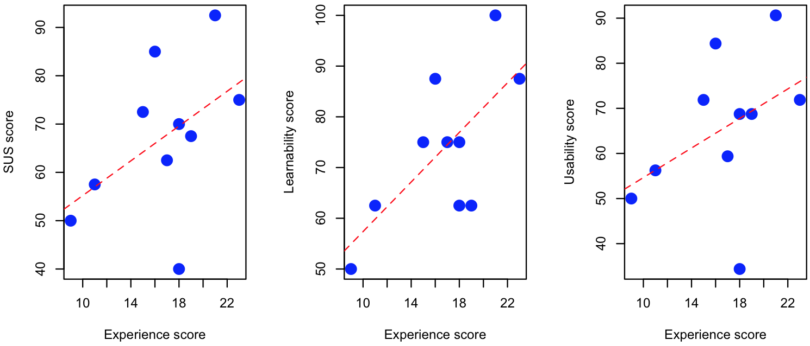

In this paper we introduce SAMOD, a.k.a. Simplified Agile Methodology for Ontology Development, a novel agile methodology for the development of ontologies by means of small steps of an iterative workflow that focuses on creating well-developed and documented models starting from exemplar domain descriptions. In addition, we discuss the results of an experiment where we asked nine people (with no or limited expertise in Semantic Web technologies and Ontology Engineering) to use SAMOD for developing a small ontology.
Developing ontologies is not a straightforward task. This assumption is implicitly demonstrated by the number of ontology development processes that have been developed in last 30 years, that have their roots in the Knowledge and Software Engineering domains. Moreover, the choice of the right development process to follow is a delicate task, since it may vary according to a large amount of variables, such as the intrinsic complexity of domain to be modelled, the context in which the model will be used (enterprise, social community, high-profile academic/industrial project, private needs, etc.), the amount of time available for the development, and the technological hostility and the feeling of unfruitfulness shown by the final customers against both the model developed and the process adopted for the development.
In the past twenty years, the Software Engineering domain has seen the proposal of new agile methodologies for software development, in contrast with highly-disciplined processes that have characterised such discipline since its beginning. Following this trend, recently, agile development methodologies have been proposed in the field of Ontology Engineering as well (e.g. ). Such kind of methodologies would be preferred when the ontology to develop should be composed by a limited amount of ontological entities – while the use of highly-structured and strongly-founded methodologies remain valid and, maybe, mandatory to solve and model incredibly complex enterprise projects.
One of main characteristics that ontology development methodologies usually have is the use of exemplar data during the development process so as to:
avoid inconsistencies – a common mistake when developing a model is to make the TBox consistent if considered alone, and inconsistent when we define an ABox for it, even if all the classes and properties are completely satisfiable. Using real-world data, as exemplar of a particular scenario of the domain we are modelling, can definitely prevent this problem;
have self-explanatory and easy-understandable models – trying to implement a particular real-world and significative scenario related to a model by using real data allows one to better understand if each TBox entity has a meaningful name that describes clearly the intent and the usage of the entity itself. This allows users to understand a model without spending a lot of effort in reading entity comments and the related documentation. The use of real data as part of the ontology development obliges ontology engineers and developers to think about the possible ways users will understand and use the ontology they are developing, in particular the very first time they look at it;
provide examples of usage – producing data within the development process means to have a bunch of exemplars that describe the usage of the model in real-world scenarios. This kind of documentation, implicitly, allows users to apply a learn-by-example approach in understanding the model and during their initial skill acquisition phase.
As already mentioned, several methodologies already propose the use of data during as part of the development. However, the current ontology engineering processes, that deal with the development of small-/medium-size ontologies, usually do not include other aspects that, according to our experience, are crucial for guaranteeing a correct and quick outcome. In particular, it would be important:
to take advantages of existing agile methodologies from the Software Engineering domain, by considering important features such as adaptive planning, evolutionary development, early delivery, continuous improvement, and rapid and flexible response to change;
not to oblige pair programming – from our personal experience, the development of small ontologies usually involves only one ontology engineer;
to provide a precise definition of different kinds of tests that the ontology must pass at each stage of the development, and that can be used for documenting the ontology as well.
In order to address all the aforementioned desiderata, in this paper we introduce SAMOD (Simplified Agile Methodology for Ontology Development), a novel agile methodology for the development of ontologies, partially inspired to the Test-Driven Development process in Software Engineering and to existing agile ontology development methodologies such as eXtreme Design (XD) . In particular, SAMOD is organised in three simple steps within an iterative process that focuses on creating well-developed and documented models by using significative exemplars of data, so as to produce ontologies that are always ready-to-be-used and easily-understandable by humans (i.e. the possible customers) without spending a lot of effort.
SAMOD is the result of our dedication to the development of ontologies in the past six years. While the first draft of the methodology has been proposed in 2010 as starting point for the development of the Semantic Publishing and Referencing Ontologies, it has been revised several times so as to come to the current version presented in this paper – which has been already used for developing several ontologies, such as the Vagueness Ontology, the F Entry Ontology, the OA Entry Ontology, and the Imperial Data Ontology. While a full introduction to SAMOD is provided in , in this paper we provide a summary of it and we discuss some outcomes of an user-based evaluation we have conducted in the past months.
The rest of the paper is organised as follows. In we introduce the entities involved in the methodology. In we present all the steps of SAMOD, providing details for each of them. In we discuss the outcomes of an experiment where we asked to subjects with limited knowledge about Semantic Web technologies and Ontology Engineering to use SAMOD for developing an ontology. In we present some of the most relevant related works in the area. Finally, in we conclude the paper sketching out some future works.
Preliminaries
The kinds of people involved in SAMOD are domain experts and ontology engineers. A domain expert, or DE, is a professional with expertise in the domain to be described by the ontology, and she is mainly responsible to define, often in natural language, a detailed description of the domain in consideration. An ontology engineer, or OE, is a person who constructs meaningful and useful ontologies by using a particular formal language (such as OWL 2) starting from an informal and precise description of a particular problem or domain provided by DEs.
A motivating scenario (MS) is a small story problem that provides a short description and a set of informal and intuitive examples about it. In SAMOD, a motivation scenario is composed by a name that characterises it, a natural language description that presents a problem to address, and one or more examples according to the description.
An informal competency question (CQ) is a natural language question that represents an informal requirement within a particular domain. In SAMOD, each informal competency question is composed by an unique identifier, a natural language question, the kind of outcome expected as answer, some exemplar answers considering the examples provided in the related motivating scenario, and a list of identifiers referring to higher-level informal competency questions that the question in consideration requires, if any.
A glossary of terms (GoT) is a list of term-definition pairs related to terms that are commonly used for talking about the domain in consideration. The term in each pair may be composed by one or more words or verbs, or even by a brief sentence, while the related definition is a natural language explanation of the meaning of such term. The terminology used for naming terms and for describing them must be as close as possible to the domain language.
As anticipated in the introduction, SAMOD prescribes an iterative process which aims at building the final model through a series of small steps. At the end of each iteration a particular preliminary version of the final model is released. Within a particular iteration in, the current model is the version of the final model released at the end of the iteration in-1. Contrarily, a modelet is a stand-alone model describing a particular aspect of the domain in consideration which is used to provide a first conceptualisation of a motivating scenario, without caring about the current model available after the previous iteration of the process – it is similar to a microtheory as introduced in Cyc . By definition, a modelet does not include entities from other models and it is not included in other models.
A test case Tn, produced in the nth iteration of the process, is a sextuple including a motivating scenario MSn, a list of scenario-related informal competency questions CQn, a glossary of terms GoTn for the domain addressed by the motivating scenario, a TBoxn of the ontology implementing the description introduced in the motivating scenario, an exemplar ABoxn implementing all the examples described in the motivating scenario according to the TBoxn, and a set of SPARQL queries SQn formalising the informal competency questions. A bag of test cases (BoT) is a set of test cases.
Given as input MSn, TBoxn and GoTn – a model test aims at checking the validity of TBoxn against specific requirements:
[formal requirement] understanding (even by using appropriate unit tests ) whether TBoxn is consistent;
[rhetorical requirement] understanding whether TBoxn covers MSn and whether the vocabulary used by TBoxn is appropriate.
Given as input MSn, TBoxn and ABoxn built according to TBoxn, and considering the examples described in MSn, a data test aims at checking the validity of the model and the dataset and against specific requirements:
[formal requirement] understanding whether the TBoxn is still consistent when considering the ABoxn;
[rhetorical requirement] understanding whether the ABoxn describes all the examples accompanying the motivating scenario completely.
Given as input TBoxn, ABoxn, CQn, and SQn, a query test aims at checking the validity of TBoxn, ABoxn, and each query in SQn against specific requirements:
[formal requirement] understanding whether each query in SQn is well-formed and can correctly run on Tboxn+ABoxn;
[rhetorical requirement] understanding whether each query in CQn is mapped into an appropriate query in SQn and whether, running each of them on TBoxn+ABoxn, the result conforms to the expected outcome detailed in each query in CQn.
Methodology
SAMOD is based on the following three iterative steps (briefly summarised in ) – where each step ends with the release of a snapshot of the current state of the process called milestone:
OEs collect all the information about a specific domain, with the help of DEs, in order to build a modelet formalising the domain in consideration, following certain ontology development principles. Then OEs create a new test case that includes the modelet. If everything works fine (i.e. model test, data test, and query test are passed), OEs release a milestone and proceed;
OEs merge the modelet of the new test case with the current model produced by the end of the last iteration of the process, and consequently they update all the test cases in BoT specifying the new current model as TBox. If everything works fine (i.e. all model, data and query tests are passed according to their formal requirements only), OEs release a milestone and proceed;
OEs refactor the current model, in particular focussing on the last part added in the previous step, taking into account good practices for ontology development processes. If everything works fine (i.e. all model, data and query tests are passed), OEs release a milestone. In case there is another motivating scenario to be addressed, OEs iterate the process, otherwise the process ends.
A brief summary of SAMOD, starting with the "Collect requirements and develop a modelet" step.
The next sections elaborate on these steps introducing a real running example considering a generic iteration in.
Step 1: define a new test case
OEs and DEs work together to write down a motivating scenario MSn, being as close as possible to the language DEs commonly use for talking about the domain. An example of motivating scenario is illustrated in .
Name
Vagueness of the TBox entities of an ontology
Description
Vagueness is a common human knowledge and language phenomenon, typically manifested by terms and concepts like High, Expert, Bad, Near etc.
In an OWL ontology vagueness may appear in the definitions of classes, properties, datatypes and individuals. For these entities a more explicit description of the nature and characteristics of their vagueness/non-vagueness is required.
Analysing and describing the nature of vagueness/non-vagueness in ontological entities is subjective activity, since it is often a personal interpretation of someone (a person or, more generally, an agent).
Vagueness can be described according to at least two complementary types referring to quantitative or qualitative connotations respectively. The quantitative aspect of vagueness concerns the (real or apparent) lack of precise boundaries defining an entity along one or more specific dimensions. The qualitative aspect of vagueness concerns the identification of such other discriminants of which boundaries are not quantifiable in any precise way.
Either a vagueness description, that specifies always a type, or a non-vagueness description provides at least a justification (defined either as natural language text, an entity or a more complex logic formula, or any combination of them) that motivates a specific aspect of why an entity should be intended as vague/non-vague. Multiple justifications are possible for the same description.
The annotation of an entity with information about its vagueness is a particular act of tagging done by someone (i.e., an agent) who associates a description of vagueness/non-vagueness (called the body of the annotation) to the entity in consideration (called the target of the annotation).
Example 1
Silvio Peroni thinks that the class TallPerson is vague since there is no way to define a crisp height threshold that may separate tall from non-tall people.
Panos Alexopoulos, on the other hand, considers someone as tall when his/her height is at least 190cm. Thus, for Panos, the class TallPerson is not vague.
Example 2
In an company ontology, the class StrategicClient is considered vague. However, the company's R&D Director believes that for a client to be classified as strategic, the amount of its R&D budget should be the only factor to be considered. Thus according to him/her the vague class StrategicClient has quantitative vagueness and the dimension is the amount of R&D budget.
On the other hand, the Operations Manager believes that a client is strategic when he has a long-term commitment to the company. In other words, the vague class StrategicClient has quantitative vagueness and the dimension is the duration of the contract.
Finally, the company's CEO thinks that StrategicClient is vague from a qualitative point of view. In particular, although there are several criteria one may consider necessary for being expert (e.g. a long-standing relation, high project budgets, etc), it's not possible to determine which of these are sufficient.
An example of motivating scenario.
Given a motivating scenario, OEs and DEs should produce a set of informal competency questions CQn, each of them identified appropriately. An example of an informal competency question, formulated starting from the motivating scenario in , is illustrated in .
Identifier
3
Question
What are all the entities that are characterised by a specific vagueness type?
Outcome
The list of all the pairs of entity and vagueness type.
Example
StrategicClient, quantitative
StrategicClient, qualitative
Depends on
1
An example of competency question.
Now, having both a motivating scenario and a list of informal competency questions, OEs and DEs write down a glossary of terms GoTn. An example of glossary of terms is illustrated in .
Term
Definition
annotation of vagueness/non-vagueness
The annotation of an ontological entity with information about its vagueness is a particular act of tagging done by someone (i.e., an agent) who associates a description of vagueness/non-vagueness (called the body of the annotation) to the entity in consideration (called the target of the annotation).
agent
The agent who tags an ontology entity with a vagueness/non-vagueness description.
description of non-vagueness
The descriptive characterisation of non-vagueness to associate to an ontological entity by means of an annotation. It provides at least one justification for considering the target ontological entity non-vague. This description is primarily meant to be used for entities that would typically be considered vague but which, for some reason, in the particular ontology are not.
description of vagueness
The descriptive characterisation of vagueness to associate to an ontological entity by means of an annotation. It specifies a vagueness type and provides at least one justification for considering the target ontological entity vague.
vagueness type
A particular kind of vagueness that characterises the entity.
quantitative vagueness
A vagueness type that concerns the (real or apparent) lack of precise boundaries defining an entity along one or more specific dimensions.
qualitative vagueness
A vagueness type that concerns the identification of such other discriminants of which boundaries are not quantifiable in any precise way.
justification for vagueness/non-vagueness description
A justification that explains one possible reason behind a vagueness/non-vagueness description. It is defined either as natural language text, an entity, a more complex logic formula, or any combination of them.
has natural language text
The natural language text defining the body of a justification.
has entity
The entity defining the body of a justification.
has logic formula
The logic formula defining the body of a justification.
An example of glossary of terms.
The remaining part of this step is led by OEs only, who are responsible of developing a modelet according to the motivating scenario, the informal competency questions and the glossary of terms.
In doing that work, they must strictly follow the following principles:
Keep it small. Keeping the number of the developed ontology entities small – e.g. Miller's magic number 7 ± 2 entities per type (classes, object properties, data properties) – so as not to overload OEs' working memory. In addition, by making small changes (and retesting frequently, as our framework prescribes), one has always a good idea of what change has caused an error/inconsistency in the model .
Middle-out development. OEs should start to define the most relevant concepts and then to focus on more high-level and more concrete ones. Such middle-out approach allows one to avoid unnecessary effort during the development because detail arises only as necessary, by adding sub- and super-classes to the basic concepts. Moreover, this approach, if used properly, tends to produce much more stable ontologies .
Keep it simple. The modelet must be designed according to the information obtained previously (MSn, CQn, GoTn) in an as-quick-as-possible way, spending the minimum effort and without adding any unnecessary semantic structure – avoiding to think about inferences at this stage, and rather focussing on describing the motivating scenario fully.
Self-explanatory entities. Each ontological entity must be understandable by humans by simply looking at its local name (i.e. the last part of the entity IRI). No labels and comments have to be added at this stage and all the entity IRIs must not be opaque – class local names has to be capitalised (e.g. Justification) and in camel-case notation if composed by more than one word (e.g. DescriptionOfVagueness), property local names must start with a non-capitalised verb and in camel-case notation if composed by more than one word (e.g. wasAttributedTo), and individual local names must be non-capitalised (e.g. ceo) and dash-separated if composed by more than one word (e.g. quantitative-vagueness).
The goal of OEs is to develop a modeletn, possibly starting from a graphical representation written in a proper visual language – such as Graffoo – so as to convert it automatically in OWL by means of appropriate tools, e.g. DiTTO .
Starting from modeletn, OEs proceed in four phases:
run a model test on modeletn. If it succeeds, then
create an exemplar dataset ABoxn that formalises all the examples introduced in MSn according to modeletn. Then, OEs run a data test and, if succeeds, then
write SPARQL queries in SQn as many informal competency questions in CQn. Then, OEs run a query test and, if it succeeds, then
create a new test case Tn = (MSn, CQn, GoTn, modeletn, ABoxn, SQn) and add it to BoT.
When running the model test, the data test and the query test, it is possible to use any appropriate software to support the task, such as reasoners (Pellet, HermiT) and query engines (Jena, Sesame).
Any failure of any test that is considered a serious issue by the OEs results in getting back to the more recent milestone. It is worth mentioning that an exception should be also arisen if OEs think that the motivating scenario MSn is to big to be covered by only one iteration of the process. In this case, it may be necessary to re-schedule the whole iteration, e.g. by splitting adequately the motivating scenario in two new ones.
Step 2: merge the current model with the modelet
At this stage, OEs merge modeletn, included in the new test case Tn, with the current model, i.e. the version of the final model released at the end of the previous iteration (i.e. in-1). OEs proceed in three consecutive steps:
to define a new TBoxn merging the current model with modeletn, by adding all the axioms in the current model and modeletn to TBoxn and then by collapsing semantically-identical entities, e.g. those that have similar names and that represent the same real-world entity (for instance Person and HumanBeing);
to update all the test cases in BoT, swapping the TBox of each test case with TBoxn and refactoring each ABox and SQ according to the new entity names if needed, so as to refer to the more recent model;
to run the model test, the data test and the query test on all the test cases in BoT, according to their formal requirements only;
to set TBoxn as the new current model.
Any serious failure of any test – i.e. something went bad in updating the test cases in BoT – results in getting back to a previous milestone. In this case, OEs have to consider either the most recent milestone, if they think there was a mistake in some actions performed during the current step, or one of the other previous milestones, if the failure is demonstrably a consequence of any of the components of the latest test case Tn.
Step 3: refactor the current model
In the last step, OEs work to refactor the current model shared among all the test cases in BoT, and, accordingly, each ABox and SQ of each test case, if needed. In doing that task, OEs must strictly follow the following principles:
Reuse existing knowledge. Reusing concepts and relations defined in other models is encouraged and often labelled as a common good practice . The reuse can result either in including external entities in the current model as they are or in providing an alignment or an harmonisation with another model.
Document it. Adding annotations – i.e. labels (i.e. rdfs:label), comments (i.e. rdfs:comment), and provenance information (i.e. rdfs:isDefinedBy) – to ontological entities, so as to provide natural language descriptions of them and to allow tools (e.g. LODE ) to produce an HTML human-readable documentation from the ontology source;
Take advantages from technologies. Enriching the current model by using all the capabilities offered by OWL 2 (e.g. keys, property characteristics, property chains, inverse properties and the like) in order to infer automatically as much information as possible starting from a (possible) small set of real data. In particular, it is important to avoid over-classifications by specifying assertions that may be automatically inferred by a reasoner – e.g. creating an inverse property of a property P defining explicitly its domain and range even if they can be inferred automatically.
Finally, once the refactor is finished, OEs have to run the model test, the data test and the query test on all the test cases in BoT. This is a crucial task to perform, since it guarantees that the refactoring has not damaged any existing conceptualisation implemented in the current model.
Output of an iteration
Each iteration of SAMOD produces a new test case that will be added to the bag of test cases (BoT). Each test case describes a particular aspect of the model under-development, i.e. the current model under consideration after one iteration of the methodology.
In addition of being integral part of the methodology process, each test case represents a complete documentation of a particular aspect of the domain described by the model, due to the natural language descriptions it includes (the motivating scenario, the informal competency questions, and the glossary of terms), as well as the formal implementation of exemplar data (the ABox) and possible ways of querying the data compliant with the model (the set of formal queries). All these additional information should help end-users in understanding, with less effort, what the model is about and how they can use it to describe the particular domain it addresses.
Experiment
We performed an experiment so as to understand to which degree SAMOD can be used by people with limited experience in Semantic Web technologies and Ontology Engineering. In particular, we organised a user testing session so as to gather some evidences on the usability of SAMOD when modelling OWL ontologies.
We asked nine Computer Science and Law people – one professor, two post-docs, and six Ph.D. students – to use SAMOD (one iteration only) for modelling a particular motivating scenario provided as exercise. SAMOD, as well as the main basics on Ontology Engineering, OWL, and Semantic Web technologies, were introduced to the subjects during four lectures of four hours each. At the end of the last lecture, we asked them to answer three questionnaires:
a background questionnaire containing questions on previous experience in Ontology Engineering and OWL;
another questionnaire containing ten likert questions according to the System Usability Scale (SUS), which also allowed us to measure the sub-scales of pure Usability and pure Learnability, as proposed recently by Lewis and Sauro ;
a final questionnaire asking for the experience of using SAMOD for completing the task.
The mean SUS score for SAMOD was 67.25 (in a 0 to 100 range), approaching the target score of 68 to demonstrate a good level of usability (according to ). The mean values for the SUS sub-scales Usability and Learnability were 65.62 and 73.75 respectively. In addition, an Experience score was calculated for each subject by considering the values of the answers given to the background questionnaire. We compared this score (x-axis in ) with the SUS values and the other sub-scales (y-axis) using the Pearson's r. As highlighted by the red dashed lines (referring to the related Least Squares Regression Lines), there is a positive correlation between the Experience score and the SUS values – i.e. the more a subject knew about ontology engineering in general, the more SAMOD was perceived as usable and easy to learn. However, only the relation between the Learnability score and the Experience score was statistical significant (p < 0.05).

Three comparisons between the SUS score (and its sub-scales) and the experience score by the subjects.
Axial coding of the personal comments expressed in the final questionnaires revealed a small number of widely perceived issues. Overall the methodology proposed has been evaluated positively by 7 subjects (described with adjectives such as useful, natural, effective, and consistent), but it has also received criticisms by 5 subjects, mainly referring to the need of more expertise in Semantic Web technologies and Ontology Engineering for using it appropriately. The use of the tests for assessing the ontology developed after a certain step has been appreciated (3 positive comments vs. 1 negative one), as well as the use of the scenarios and examples in the very first step of SAMOD (3 positive comments) and the implementation of competency questions in form of SPARQL queries (2 positive comments). All the outcomes of the questionnaires are available online in the SAMOD GitHub repository.
Related works
Several quick-and-iterative ontology development processes have been introduced recently, which could be preferred when the ontology to develop should be composed by a limited amount of ontological entities – while the use of highly-structured and strongly-founded methodologies (e.g. ) is still necessary and, maybe, mandatory for incredibly complex enterprise projects. In this section we introduce some of the most interesting agile approaches to ontology development.
One of the first agile methodologies introduced in the domain is eXtreme Design (XD) , which has been inspired by the eXtreme Programming methodology in Software Engineering. The authors described XD as an approach, a family of methods and associated tools, based on the application, exploitation, and definition of ontology design patterns (ODPs) for solving ontology development issues. Summarising, XD is an agile methodology that uses pair design (i.e. groups of two ontology engineers working together during the development) and an iterative process which starts with the collection of stories and competency questions as requirements to address, and then it proposes the re-use of existing ontology design patterns for addressing such informal requirements.
Another recent approach has been introduced by Keet and Lawrynowicz in . They propose to transfer concepts related to the Test-Driven Development in Software Engineering into the Ontology Engineering world. The main idea behind this methodology is that tests have to be run in advance before to proceed with the modelling of a particular (aspect of a) domain. Of course, the first execution of the tests should fail, since no ontology has been already developed for addressing them properly, while the ontology developed in future iterations of the process should result in passing the test eventually.
De Nicola and Missikoff have recently introduced their Unified Process for ONtology building methodology (a.k.a. UPON Lite), which is an agile ontology engineering method that places end-users without specific ontology expertise (domain experts, stakeholders, etc.) at the centre of the process. The methodology is composed by an ordered set of six steps. Each step outputs a self-contained artefact immediately available to end users, that is used as input of the subsequent step. This makes the whole process progressive and differential, and involves ontology engineers only the very last step of the process, i.e. when the ontology has to be formalised in some standard language.
Conclusions
In this paper we have introduced SAMOD, a Simple Agile Methodology for Ontology Development. In particular, we have introduced its process by detailing each of its steps, and we have also discussed the results of an experiment we have run involving nine people with no or limited expertise in Semantic Web technologies and Ontology Engineering.
In the future, we plan to involve a larger set of users so as to gather additional data about its usefulness, usability, and effectiveness. In addition, we plan to develop supporting tools for accompanying and facilitating users in each step of the methodology.
Acknowledgements
We would like to thank Jun Zhao for her precious comments and concerns about the initial drafts of SAMOD, David Shotton for our fruitful discussions when developing the SPAR Ontologies, Francesca Toni as one of the first users of such methodology, and Panos Alexopoulos as co-author of the Vagueness Ontology that we used herein to introduce all the examples of the SAMOD development process.
References
Beck, K. (2003). Test-driven development by example. Addison-Wesley. ISBN: 978-0321146533
Uschold, M., Gruninger, M. (1996). Ontologies: Principles, methods and applications. IEEE Intelligent Systems, 11 (2): 93-155. http://dx.doi.org/10.1109/MIS.2002.999223
Miller, G. A. (1956). The magical number seven, plus or minus two: Some limits on our capacity for processing information. Psychological Review, 63 (2): 81–97. http://dx.doi.org/10.1037/h0043158
Atkinson, R. K., Derry, S. J., Renkl, A., Wortham, D. (2000). Learning from Examples: Instructional Principles from the Worked Examples Research. Review of Educational Research, 70 (2): 181–214. http://dx.doi.org/10.3102/00346543070002181
Brockmans, S., Volz, R., Eberhart, A., Löffler, P. (2004). Visual Modeling of OWL DL Ontologies Using UML. In Proceedings of ISWC 2004: 7–11. http://dx.doi.org/10.1007/978-3-540-30475-3_15
Chen, P. P. (1974). The Entity-Relationship Model: Toward a Unified View of Data. ACM Transactions on Database Systems, 1 (1): 9–36. http://dx.doi.org/10.1145/320434.320440
Falco, R., Gangemi, A., Peroni, S., Vitali, F. (2014). Modelling OWL ontologies with Graffoo. In The Semantic Web: ESWC 2014 Satellite Events: 320–325. http://dx.doi.org/10.1007/978-3-319-11955-7_42
Peroni, S., Shotton, D., Vitali, F. (2012). The Live OWL Documentation Environment: a tool for the automatic generation of ontology documentation. In Proceedings of EKAW 2012: 398–412. http://dx.doi.org/10.1007/978-3-642-33876-2_35
Presutti, V., Daga, E., Gangemi, A., Blomqvist, E. (2009). eXtreme Design with Content Ontology Design Patterns. In Proceedings of WOP 2009. http://ceur-ws.org/Vol-516/pap21.pdf
Peroni, S. (2014). The Semantic Publishing and Referencing Ontologies. In Semantic Web Technologies and Legal Scholarly Publishing: 121-193. http://dx.doi.org/10.1007/978-3-319-04777-5_5
Sauro, J. (2011). A Practical Guide to the System Usability Scale: Background, Benchmarks & Best Practices. ISBN: 978-1461062707
Strauss, A. Corbin, J. (1998). Basics of Qualitative Research Techniques and Procedures for Developing Grounded Theory (2nd edition). Sage Publications: London. ISBN: 978-0803959408
De Nicola, A., Missikoff, M. (2016). A Lightweight Methodology for Rapid Ontology Engineering. Communications of the ACM, 59 (3): 79–86. http://dx.doi.org/10.1145/2818359
Sowa, J. F. (1993). Building large knowledge-based systems: Representation and inference in the cyc project: D.B. Lenat and R.V. Guha. Artificial Intelligence, 61 (1): 95–104. http://dx.doi.org/10.1016/0004-3702(93)90096-T
Note that if there are no data in any example of the motivating scenario that answer to the question, it is possible that either the competency question is not relevant for the motivating scenario or the motivating scenario misses some important exemplar data. In those cases one should remove the competency question or modify the motivating scenario accordingly.
The OEs involved in our methodology can vary in number. However SAMOD has been thought for being used also by one OE only.
Note that it is possible that multiple entities (i.e. classes, properties, individuals) are actually hidden behind one single definition in the glossary of terms.
If in is actually i1, then the modeletn becomes the current model since no previous model is actually available.
An alignment is set of correspondences between entities belonging to two models different models.
It is the process of modifying a model (and also to align it, if necessary) to fully fit or include it into another model.